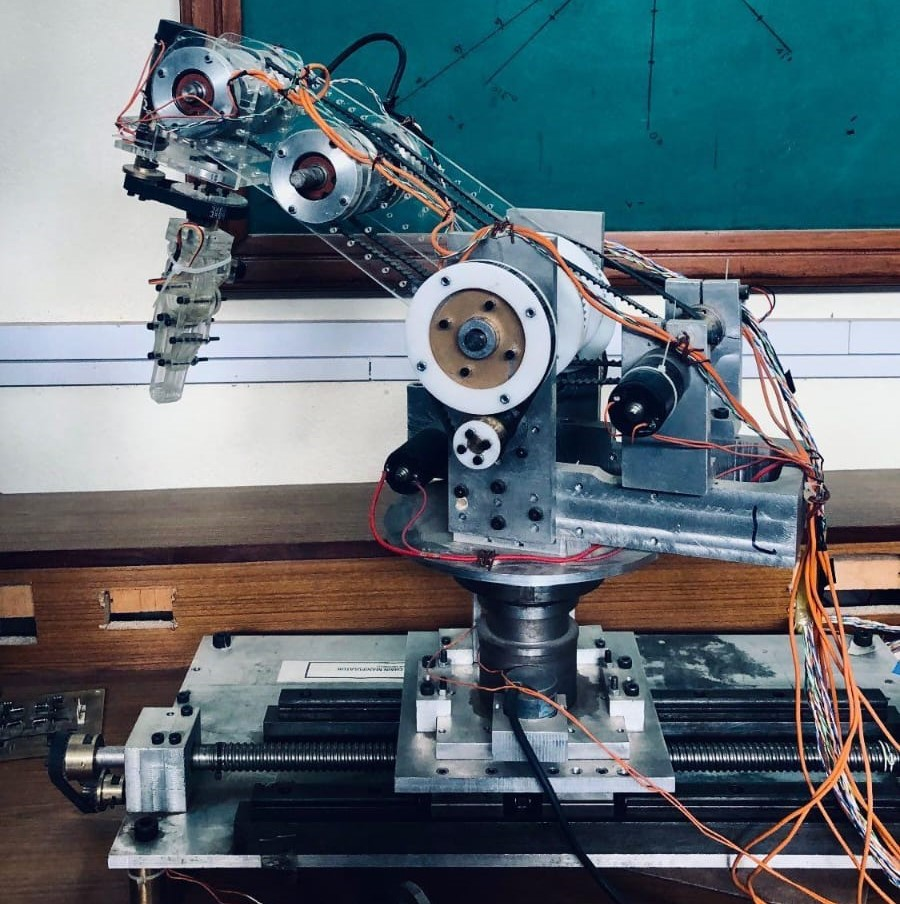

6 DOF Serial Manipulator
View Code ↗This project was my Final Year Project at PIEAS, supervised by Dr. Nasir Rehman Jadoon. It involved the design and development of a 6 Degree-of-Freedom (DOF) serial robotic manipulator using embedded systems, kinematic modeling, and industrial communication protocols.
System Architecture
We implemented a Master-Slave architecture where one STM32F103C8T6 (Bluepill) acted as the master controller, communicating over the CANBUS protocol (via MCP2515 transceivers) with six STM32 Bluepills as slaves. Each slave handled control of a single joint/motor in the robot.
Motor Control
We initially used L298N motor drivers for control, but later upgraded to more efficient IBT-2 (BTS7960) drivers. Each motor was equipped with a 500 PPR rotary encoder to enable precise position feedback and closed-loop control.
Mechanical Design & Simulation
The complete robot was modeled in SolidWorks with accurate mechanical constraints and exported for simulation in CoppeliaSim (formerly V-REP). We conducted extensive simulation of various pick-and-place operations and workspace analysis.
Technical Features
- Inverse and Forward Kinematics implemented for 6 DOF robotic arm
- CANBUS communication using MCP2515 modules
- Real-time multitasking and control loops with STM32 bare-metal programming
- PID-based DC motor control with encoder feedback
- Mechanical precision and durability via custom SolidWorks modeling
- Simulation and path planning in CoppeliaSim
This project reflects an end-to-end robotic system design journey — from mechanical and control design to embedded systems and industrial communication.
